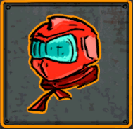
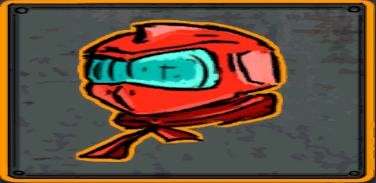
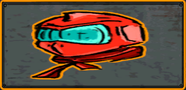
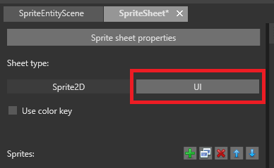
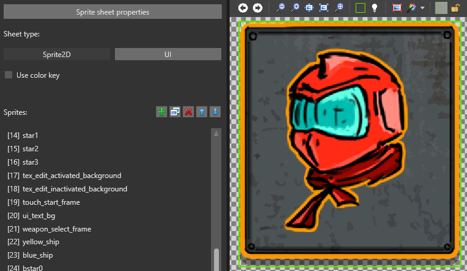
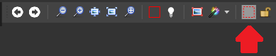
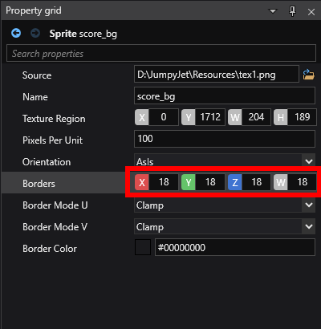
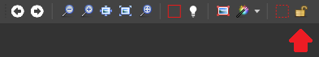

Set sprite borders
Warning
Приносим свои извинения за неудобства. Для этой страницы нет перевода на русский язык. Она будет отображаться на английском языке.
Beginner Designer
Sprite borders are areas that don't deform when you scale the sprite. These are often useful for sprites used for UI elements such as menu buttons. You can only set sprite borders for sprites set to the UI sheet type.
| Original sprite | Scaled without borders | Scaled with borders |
|---|---|---|
|  |  |  |
| Edges are deformed | Edges not deformed |
Set sprite borders
In the Sprite Editor, make sure the sheet type is set to UI.

Note
This has no effect on how the sprite is rendered at runtime, but lets you set slightly different properties, including sprite borders.
From the Sprites list, select the sprite you want to add sprite borders to.
Make sure the texture region for the sprite is correct. For information about how to do this, see Edit sprites.

In the Sprite Editor toolbar, select Sprite border resize tool.

Drag the sprite borders into position.
Note
By default, the sprite borders match the sprite texture region.
Tip
You can zoom in and out using Ctrl + mousewheel to make precise selections.
Tip
For fine-tune control over the sprite borders, adjusting one-by-one in the Property Grid

Lock the sprite borders
By default, sprite borders move as you resize the texture region. To stop this from happening, click Lock the sprite borders in the toolbar.

Note
Sprite borders always stay inside the texture region.